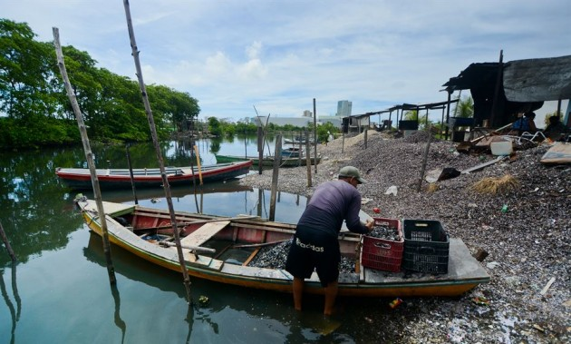
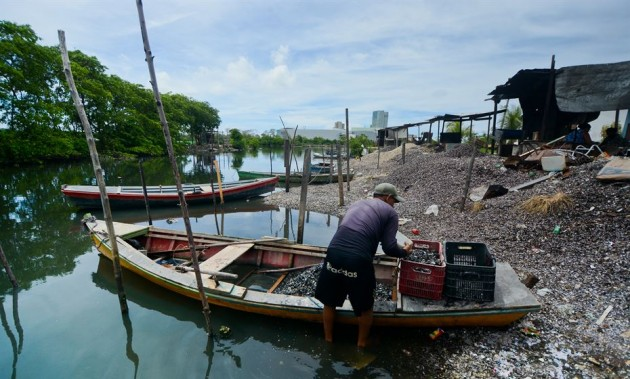

Berçário e Alimentação
Muitos peixes e invertebrados utilizam os estuários como áreas de reprodução, desenvolvimento inicial e alimentação durante parte do ciclo de vida [3].
A zona onde o rio e o mar se encontram, formando ecossistemas dinâmicos e cheios de vida.
Estuários são áreas costeiras onde águas doces de rios se misturam com água salgada do mar, formando ambientes altamente produtivos e essenciais para várias espécies [1]. Essa mistura cria gradientes de salinidade, correntes e sedimentos que sustentam habitats únicos com grande importância ecológica e econômica [2].
Muitos peixes e invertebrados utilizam os estuários como áreas de reprodução, desenvolvimento inicial e alimentação durante parte do ciclo de vida [3].
Os estuários reciclam nutrientes e funcionam como sistemas naturais de filtragem, aumentando a produtividade costeira [4].
Estuários abrigam grande variedade de peixes, aves e crustáceos, que dependem desses ambientes para alimentação e reprodução [5].
Marismas e manguezais associados aos estuários filtram sedimentos e poluentes, protegendo áreas costeiras e melhorando a qualidade da água [6].
A vegetação dos estuários, como manguezais e marismas, captura e armazena carbono de forma eficiente, contribuindo para o equilíbrio climático global [7].
Estuário e APA do Rio Timbó — um dos ambientes mais importantes do litoral pernambucano [8].
Expansão urbana, portos e aterros transformam a dinâmica natural do estuário e degradam habitats sensíveis [9].
Descargas industriais e esgoto não tratado prejudicam a qualidade da água e reduzem a biodiversidade local [10].

 


Estuários: zonas de transição essenciais para ecossistemas e pessoas.